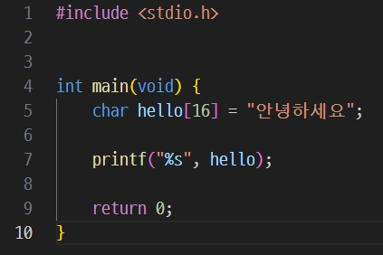
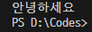
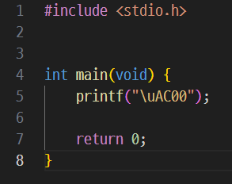
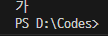

한글 로마자 변환기
1. 준비
2024-03-01 12:01
가장 처음으로 만들어 볼 것은 한글을 로마자로 변환해주는 프로그램이다.
사이트 페이지 만들 때 페이지 이름을 이 프로그램을 통하여 만들면 좋을 것 같아 만들어 보겠다.
우선, 현재 쓰이는 한글 로마자 표기법이 어떤 식으로 되어 있는지를 알아야 한다.
현재 대한민국에서 공식적으로 쓰이는 로마자 표기법은 '국어의 로마자 표기법'이다.
이외에도 매큔-라이샤워 표기법, 예일 표기법 등 여러 종류의 한글의 로마자 표기법이 있지만, 한꺼번에 구현하려 하면 복잡해지니 '국어의 로마자 표기법'을 우선 구현해 보자.
'국어의 로마자 표기법'에선 한글을 아래 표와 같은 규칙으로 로마자화 한다:
| 한글 | ㄱ | ㄲ | ㅋ | ㄷ | ㄸ | ㅌ | ㅂ | ㅃ | ㅍ | ㅈ | ㅉ | ㅊ | ㅅ | ㅆ | ㅎ | ㄴ | ㅁ | ㅇ | ㄹ |
|---|---|---|---|---|---|---|---|---|---|---|---|---|---|---|---|---|---|---|---|
| 로마자 | g/k | kk | k | d/t | tt | t | b/p | pp | p | j | jj | ch | s | ss | h | n | m | ng | r/l |
| 한글 | ㅏ | ㅓ | ㅗ | ㅜ | ㅡ | ㅣ | ㅐ | ㅔ | ㅚ | ㅟ | ㅑ | ㅕ | ㅛ | ㅠ | ㅒ | ㅖ | ㅘ | ㅙ | ㅝ | ㅞ | ㅢ |
|---|---|---|---|---|---|---|---|---|---|---|---|---|---|---|---|---|---|---|---|---|---|
| 로마자 | a | eo | o | u | eu | i | ae | e | oe | wi | ya | yeo | yo | yu | yae | ye | wa | wae | wo | we | ui |
이것 외에도 발음의 변화를 반영하기 위한 세세한 규칙들이 여럿 있지만 지금은 일단 넘기고, 기본적인 것부터 구현해 보자.
먼저 C에서 한글이 어떤 식으로 출력되는지 알아보자.
C에서 한글을 출력하는 방법은 단순하다.
한글은 utf-8에서 3byte이니 3byte 크기의 배열을 선언하고 거기에 한글을 넣으면 된다.
한글 배열도 3xbyte의 크기로 선언하면 된다.


이런 식으로 하면 된다.
그다음은 유니코드 출력 방법을 알아보자.
이것도 정말 간단하다.
\u 뒤에 숫자를 넣어주면 그 유니코드에 맞는 글자를 출력할 수 있다.


이런 식으로 하면 된다.
오늘은 여기까지만 적겠다. 2024-03-01 2:08